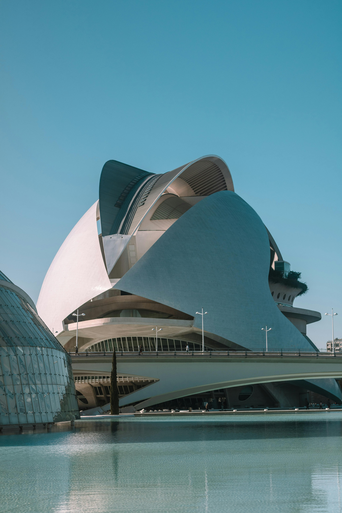
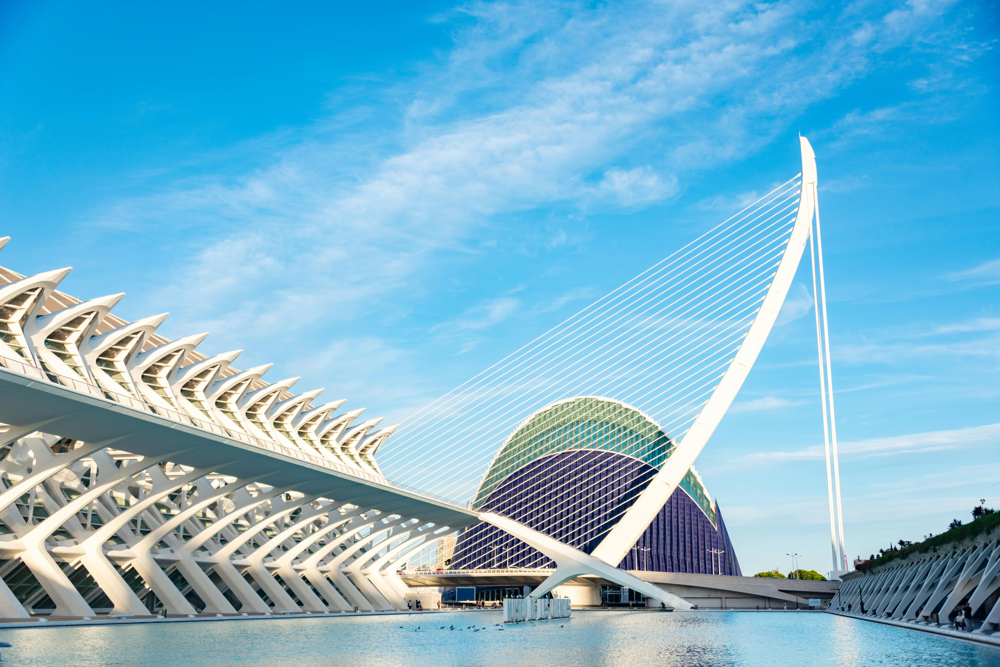
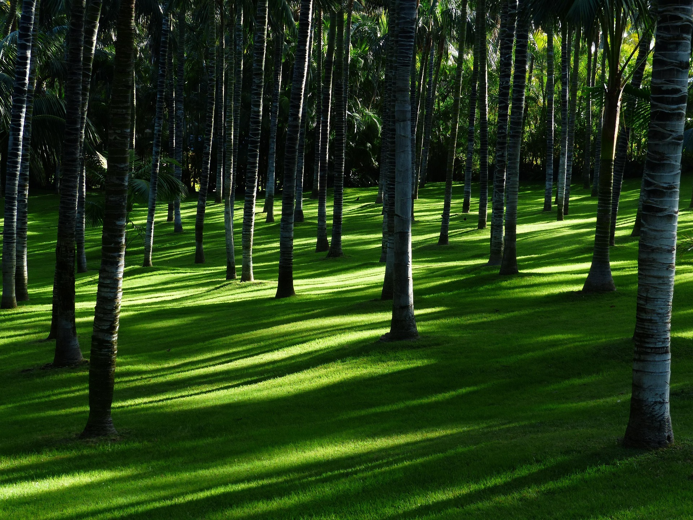
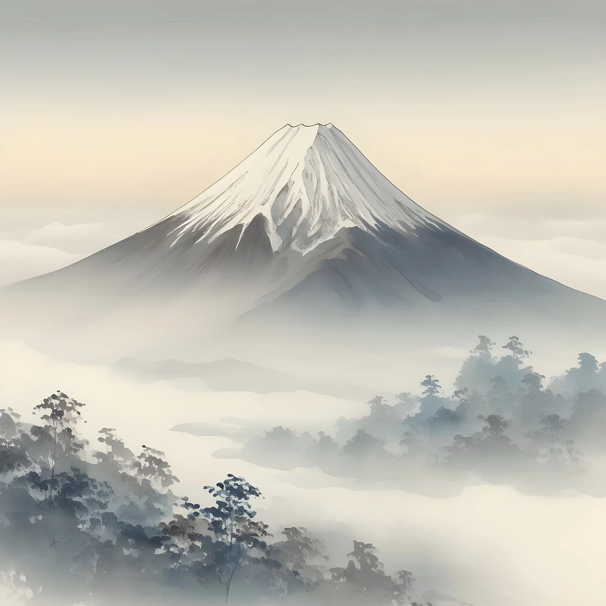
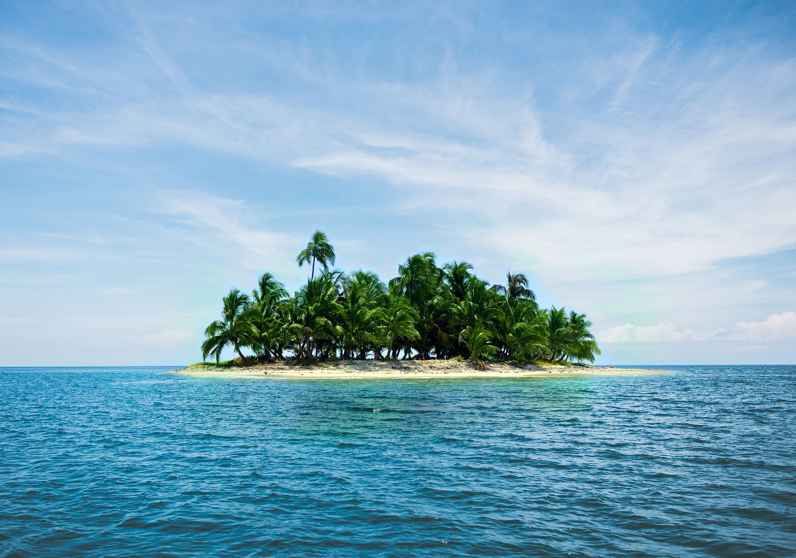
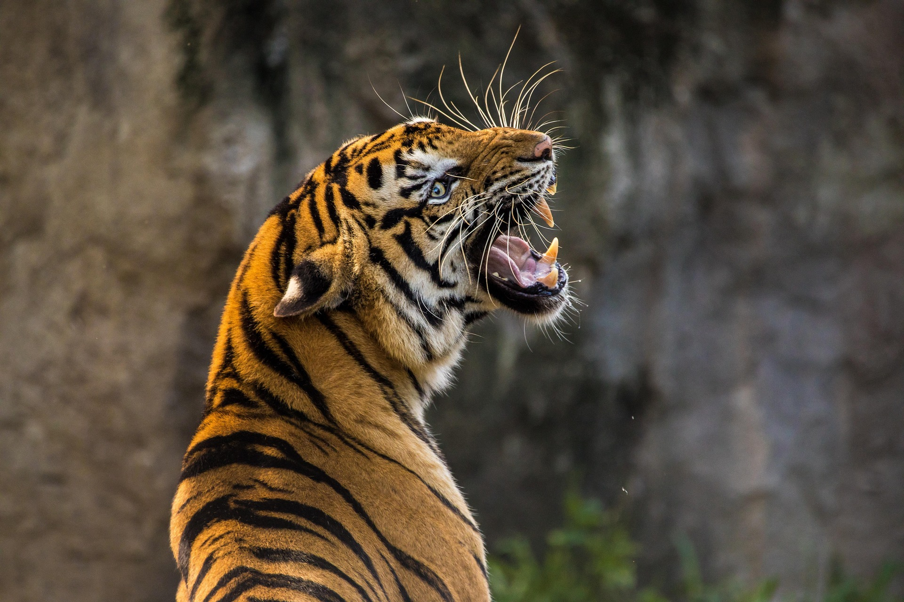
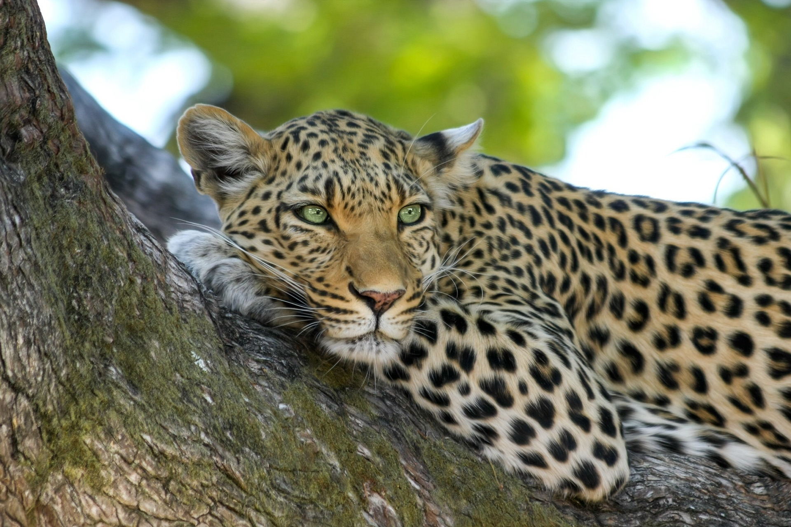
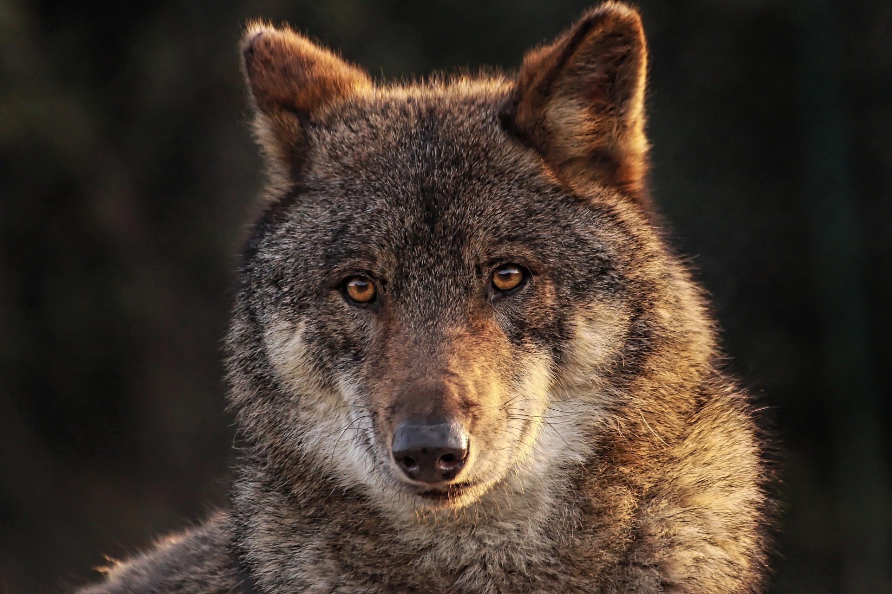

Kuala Lumpur is the capital of Malaysia and the country's largest city. It is known for its mix of cultures, languages, and religions, with large communities of Malay, Chinese, and Indian people.
Ksh.40,300
Valencia is an overlap of Roman, Visigothic, Muslim and Medieval cultures. Indications of this are iconic monuments such as the Silk Exchange (declared a Cultural Heritage site by UNESCO), the Almoina, The Serrranos and Quart towers and the Cathedral.
Ksh.20,300
Brussels is the capital city of Belgium. It is known for its historic grand place atomiam and manneken. It has a real culture each consist of medivial period at novu and modern architecture. Main attraction Kathidro of saint Michael and saint Gudula
Ksh. 39,300




Tigers are powerful hunters with sharp teeth, strong jaws and agile bodies. They are the largest terrestrial mammal whose diet consists entirely of meat; the largest tiger ever recorded was an Amur tiger. The tiger's closest relative is the lion.
Ksh.8000
Arctic fox is the only land animal native to Iceland. They survived on the island through the last ice age and stuck around once the thick glacial ice receded.
Ksh.2,300
hey are nocturnal animals and do most of their hunting at night. Their large eyes and dilated pupils allow them to see well in dark conditions. Leopards are incredibly athletic and known for their climbing ability.
Ksh.3,300
Rhinoceros species are large mammalian megaherbivores, and the only genus in Rhinocerotidae to possess one horn, incisors, and lower canines. Their horn is not made of bone, but of densely packed keratin, and continuously grows as a result.
Ksh.6,300
Is a native north america animal native to North america. It is largest of procyonid. its greys port mostly consist of dense under fur.
Ksh.4,300
Highly intelligent, social apex preditor that livein tight-knit family packs, usually led by an alpha pair.
Ksh.4,300Tourism management is the oversight of all activities related to the tourism and hospitality industries.
It's a multidisciplinary field that that offers transpotation,food and accommodations cost.


TouristLink Technologies helps ex-pat and local businesses stand out on Google, attract tourists directly, and keep more of the revenue you earn to experience your luxury.